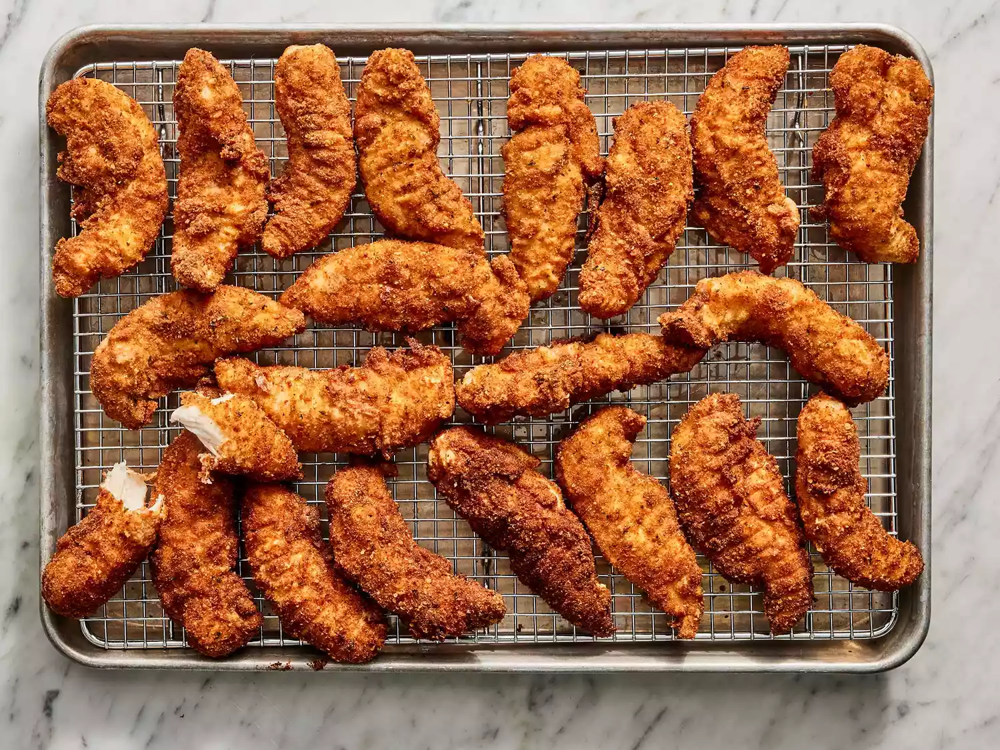

Home
Fried Chicken Tenders

Description
This fried chicken tenders recipe makes crispy, delicious chicken pieces, paired with our own spicy horseradish dipping sauce. We serve it with our favorite potato salad and corn on the cob.
Ingredients
Tenders
- 2 large eggs, beaten
- 2 tablespoons water
- 2 cups Italian-style seasoned bread crumbs
- ½ teaspoon ground black pepper
- ½ teaspoon cayenne pepper
- 24 chicken tenderloins
- 2 quarts oil for frying
- 1 cup all-purpose flour
Dipping Sauce
- ½ cup sour cream
- 3 tablespoons prepared horseradish
- 3 tablespoons prepared mustard
- 1 dash Worcestershire sauce
- 1 cup mayonnaise
Steps
- Prepare the breading station: Place flour in a shallow bowl. Place eggs and water in a second shallow bowl. Place bread crumbs in a third shallow bowl, and mix in ground black pepper and cayenne pepper.
- Coat chicken in flour, then eggs, and then bread crumbs, one piece at a time, and set aside.
- Heat oil in a deep fryer to 375 degrees F (190 degrees C).
- Fry chicken in small batches until the pieces are golden brown, 6 to 8 minutes. Remove chicken to drain on paper towels or a wire rack.
- Make the dipping sauce: Combine mayonnaise, sour cream, horseradish, mustard, and Worcestershire sauce in a small bowl. Mix well, and serve with chicken.